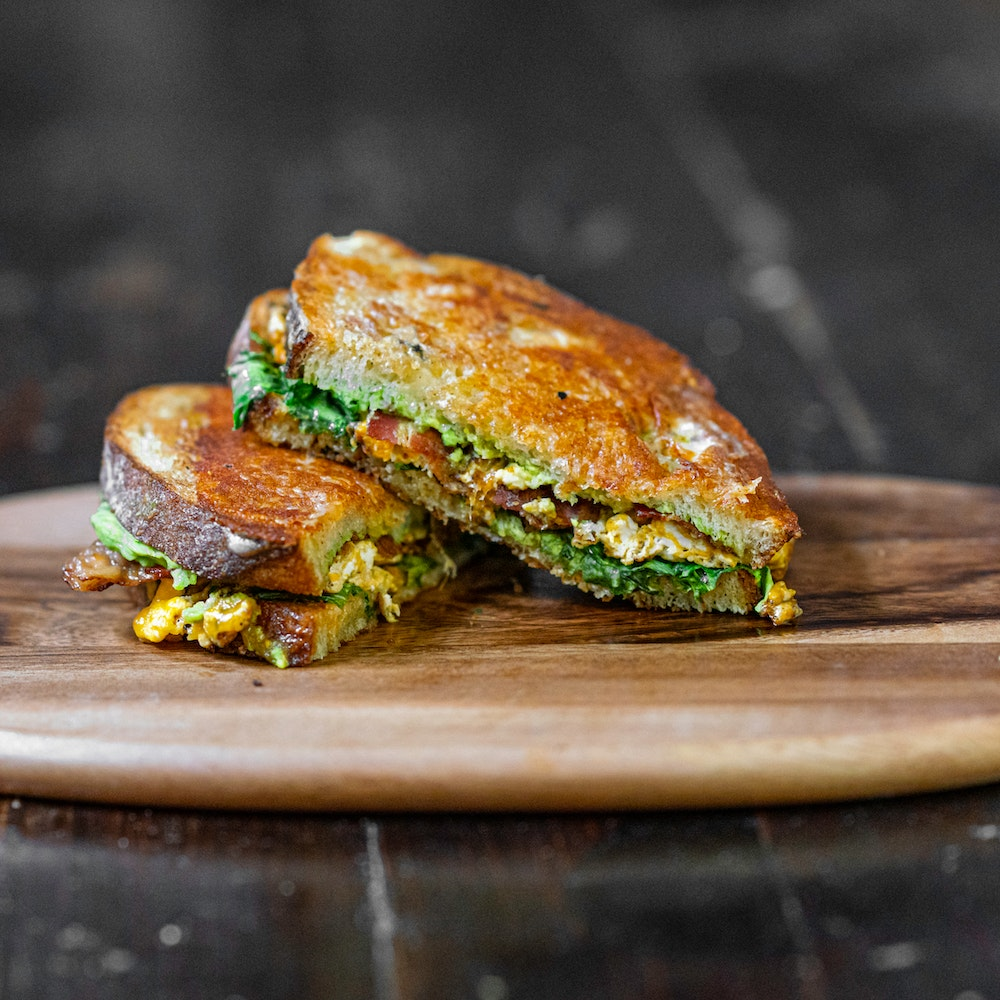

Sandwich

Homemade Smash Burgers
This smash burger recipe makes super juicy burgers with crispy edges. Don't use meat that is leaner than 80/20 for
best results, and make sure the meat is very cold. I prefer to cook these outdoors to avoid smoking
up the kitchen.
Ingredients
- ⅓ cup kosher salt
- ¼ cup brown sugar
- 2 tablespoons chili powder
- 2 tablespoons freshly ground black pepper
- 1 tablespoon ground cumin
- 1 teaspoon cayenne pepper
Directions
- Mix salt, brown sugar, chili powder, pepper, cumin, and cayenne together for the rub.
- Stir together mayonnaise, chili sauce, Sriracha, and rice vinegar in a small bowl until smooth.
- Place ribs on a foil-lined baking sheet. Season both sides generously with some of the rub. Reserve remaining
rub for another use. Cover top with parchment paper and wrap foil over the edges. Cover the whole baking sheet
with another large sheet of foil, sealing in the sides.
UP
Back to home page